iPAS 資訊安全工程師 中級 (114年第1次)
科目 I21: 資訊安全規劃實務
評鑑內容 (點擊篩選)
1.1
ISMS建置實務與法規遵循
(7)
1.2
資安管理實務/架構規劃
(15)
2.1
風險分析與評估
(6)
2.2
風險處理實務
(12)
#1
1.2 資安管理實務/架構規劃
為避免所建置之網購系統遭受憑證填充攻擊, 下列何項舉措最無效果?
答案解析
憑證填充攻擊 (Credential Stuffing) 是利用已洩漏的用戶名和密碼組合，嘗試登入其他系統。這種攻擊的前提是攻擊者已經掌握了有效的帳密。
(A) OTP 是多因子驗證的一種形式，即使帳密被盜，攻擊者沒有即時的 OTP 也無法登入，非常有效。
(B) MFA 要求使用者提供多種驗證因素（如密碼+OTP、密碼+生物辨識），能有效防禦僅持有帳密的攻擊者。
(C) 雙因子驗證是 MFA 的一種，同樣有效。
(D) 強化密碼複雜度可以增加密碼被暴力破解或猜測的難度，但對於憑證填充攻擊，攻擊者已經持有外洩的密碼，密碼本身有多複雜已不重要。因此，單純強化密碼複雜度對於防禦憑證填充攻擊效果最差。
(A) OTP 是多因子驗證的一種形式，即使帳密被盜，攻擊者沒有即時的 OTP 也無法登入，非常有效。
(B) MFA 要求使用者提供多種驗證因素（如密碼+OTP、密碼+生物辨識），能有效防禦僅持有帳密的攻擊者。
(C) 雙因子驗證是 MFA 的一種，同樣有效。
(D) 強化密碼複雜度可以增加密碼被暴力破解或猜測的難度，但對於憑證填充攻擊，攻擊者已經持有外洩的密碼，密碼本身有多複雜已不重要。因此，單純強化密碼複雜度對於防禦憑證填充攻擊效果最差。
#2
1.1 ISMS建置實務與法規遵循
下列何項「不」是 ISO/IEC 27001:2022 資訊安全目標應滿足之事項?
答案解析
根據 ISO/IEC 27001:2022 標準 6.2 條款的要求，組織應在相關功能、層級及流程建立資訊安全目標。這些目標應：
a) 與資訊安全政策一致；
b) 可量測 (若可行)；
c) 考量適用的資訊安全要求事項，以及風險評鑑與風險處理的結果；
d) 被溝通 (傳達)；
e) 於適切時更新之。
標準並未強制規定目標必須以紙本文件形式提供，可以透過電子化或其他方式傳達。因此，(D) 不是必須滿足的事項。
a) 與資訊安全政策一致；
b) 可量測 (若可行)；
c) 考量適用的資訊安全要求事項，以及風險評鑑與風險處理的結果；
d) 被溝通 (傳達)；
e) 於適切時更新之。
標準並未強制規定目標必須以紙本文件形式提供，可以透過電子化或其他方式傳達。因此，(D) 不是必須滿足的事項。
#3
2.1 風險分析與評估
2023年發現某國際知名汽車大廠於將近10 年期間, 將超過 200 萬輛車子位置資訊公開在網路上, 車上攝影機拍攝的影像也曝險了將近 7 年。經其內部分析, 事件主要原因在於對員工的資料處理政策說明不夠徹底, 導致雲端環境錯誤設定所致。請問下列何項措施, 最「不」能防止類似事件再次發生?
答案解析
事件的根本原因包括政策說明不清（人的因素）和雲端設定錯誤（技術因素）。
(A) 強化員工教育訓練可以提升員工對資料處理政策的理解和資安意識，有助於防止因人為疏失導致的錯誤設定。
(B) 制定更明確的雲端資安政策，提供清晰的指導原則，有助於規範員工行為和環境配置。
(C) 執行雲端弱點掃描（或更具體的雲端安全配置管理 CSPM 掃描）可以主動發現錯誤的配置（如公開存取的儲存桶），是技術層面的重要預防措施。
(D) 備份雲端環境設定本身不能防止錯誤設定的發生。備份主要用於災難復原，若備份的是錯誤的設定，恢復後問題依然存在。雖然設定的版本控制可能有點幫助，但單純的備份對於預防此類因設定錯誤導致的資料外洩事件效果最差。
(A) 強化員工教育訓練可以提升員工對資料處理政策的理解和資安意識，有助於防止因人為疏失導致的錯誤設定。
(B) 制定更明確的雲端資安政策，提供清晰的指導原則，有助於規範員工行為和環境配置。
(C) 執行雲端弱點掃描（或更具體的雲端安全配置管理 CSPM 掃描）可以主動發現錯誤的配置（如公開存取的儲存桶），是技術層面的重要預防措施。
(D) 備份雲端環境設定本身不能防止錯誤設定的發生。備份主要用於災難復原，若備份的是錯誤的設定，恢復後問題依然存在。雖然設定的版本控制可能有點幫助，但單純的備份對於預防此類因設定錯誤導致的資料外洩事件效果最差。
#4
1.2 資安管理實務/架構規劃
控制措施實施階段可分成事前、中及後等三項。請問下列哪些屬於事中控制類型 (如偵測 [Detective]) 的應用方式? (複選)
答案解析
控制措施類型：
(B) 檢核稽核日誌是為了發現異常或未授權的活動，屬於偵測型控制。
(C) 定期弱點掃描通常是為了在事前找出並修補弱點，更偏向預防型控制的一環（找出問題以便預防）。
(D) CCTV 主要用於事中監控或事後追查，其監控功能屬於偵測型控制。
因此，屬於事中偵測型的有 (A)、(B)、(D)。
- 事前控制 (Preventive)：旨在防止事件發生。例如：防火牆規則、存取控制、加密、安全意識培訓。
- 事中控制 (Detective)：旨在偵測正在發生或已經發生的事件。例如：入侵偵測系統、稽核日誌監控、警報系統、CCTV 監控。
- 事後控制 (Corrective/Recovery)：旨在矯正已發生的事件或從事件中恢復。例如：備份還原、事件應變計畫、修補程式。
(B) 檢核稽核日誌是為了發現異常或未授權的活動，屬於偵測型控制。
(C) 定期弱點掃描通常是為了在事前找出並修補弱點，更偏向預防型控制的一環（找出問題以便預防）。
(D) CCTV 主要用於事中監控或事後追查，其監控功能屬於偵測型控制。
因此，屬於事中偵測型的有 (A)、(B)、(D)。
#5
1.1 ISMS建置實務與法規遵循
【題組1】情境如附圖所示(附圖為文字描述), 甲金融機構 (屬資通安全管理法規範對象) 於本開發案起案前對於受託者之選任作業, 下列何者最「不」適切? (附圖摘要: A公司承接甲金融機構案子, B公司是A的合作夥伴/下游廠商)
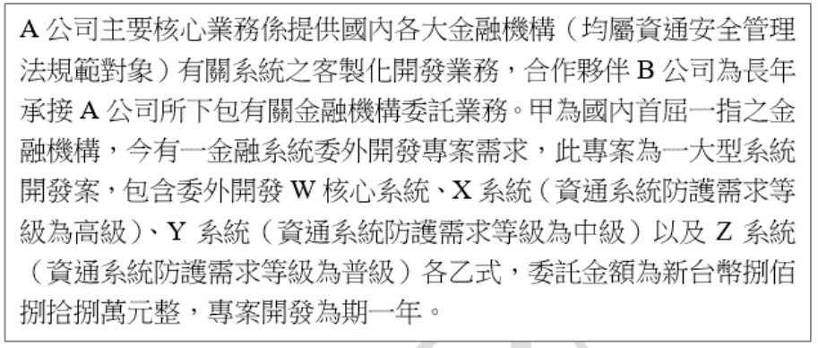
答案解析
甲金融機構委外開發，需依資通安全管理法及其子法（如資通安全責任等級分級辦法附錄十、資通安全事件通報及應變辦法等）對受託者進行監督與管理。在選任受託者 (A公司) 時，應評估其資通安全維護能力。
(A) 確保受託者有足夠且合格的人員是重要的。
(C) 確認受託者有相關經驗和專業人員是評估其能力的關鍵。
(D) 確認受託者有完善的資安管理措施（例如 ISO 27001 認證或同等的管理制度）是必要的。
(B) ISO 9001 是品質管理系統標準，雖然有助於確保服務品質，但它並非針對資訊安全的標準。對於評估受託者的資安能力而言，ISO 27001（資訊安全管理系統）證照會更為適切。因此，僅確認 ISO 9001 在評估資安選任上最不適切。
(A) 確保受託者有足夠且合格的人員是重要的。
(C) 確認受託者有相關經驗和專業人員是評估其能力的關鍵。
(D) 確認受託者有完善的資安管理措施（例如 ISO 27001 認證或同等的管理制度）是必要的。
(B) ISO 9001 是品質管理系統標準，雖然有助於確保服務品質，但它並非針對資訊安全的標準。對於評估受託者的資安能力而言，ISO 27001（資訊安全管理系統）證照會更為適切。因此，僅確認 ISO 9001 在評估資安選任上最不適切。
#6
1.1 ISMS建置實務與法規遵循
【題組1】情境如附圖所示, A公司今成功承攬甲金融機構 (屬資通安全管理法規範對象) 所委託之系統開發案, 因案量過大, 故A公司一如以往, 擬尋求合作夥伴B公司執行本案之部分系統開發業務, 並尋求取得甲金融機構之同意。有關甲金融機構就A公司辦理受託業務之複委託事項, 其應注意之事項, 下列說明何者最「不」適切?
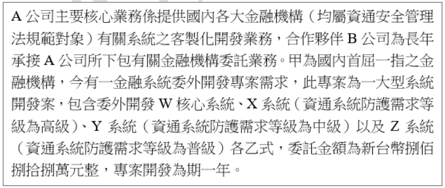
答案解析
根據資通安全管理法第4條及相關子法（如資通安全責任等級分級辦法附錄十）的規定，公務機關或特定非公務機關（如甲金融機構）將業務委外辦理時，應考量受託者之專業能力與經驗，並於契約中載明相關資通安全要求及管理事項。若受託者 (A公司) 需將部分業務複委託予第三人 (B公司)，應事先取得委託機關（甲）同意，且複委託之對象（B）亦應符合相關資安要求。
因此，甲金融機構在同意複委託時，應注意：
(A) 複委託的範圍：哪些業務可以複委託。
(B) 複委託的對象：B公司的資格與能力。
(D) 複委託受託者（B）應具備的資安措施：確保B公司也有相應的資安防護能力。
(C) 複委託的金額本身並非法規直接關注的重點，重點在於複委託的範圍、對象以及其資安維護能力是否符合要求。因此，複委託金額是最不適切的考量事項。
因此，甲金融機構在同意複委託時，應注意：
(A) 複委託的範圍：哪些業務可以複委託。
(B) 複委託的對象：B公司的資格與能力。
(D) 複委託受託者（B）應具備的資安措施：確保B公司也有相應的資安防護能力。
(C) 複委託的金額本身並非法規直接關注的重點，重點在於複委託的範圍、對象以及其資安維護能力是否符合要求。因此，複委託金額是最不適切的考量事項。
#7
1.1 ISMS建置實務與法規遵循
【題組1】情境如附圖所示, A公司承攬甲金融機構 (屬資通安全管理法規範對象) 所委託之系統開發案, B公司受A公司之複委託, 辦理部份系統開發業務, 且B公司所負責之 Y 系統, 部份系統程式碼係取自外部第三方所開發之程式碼。下列說明何者最適切?
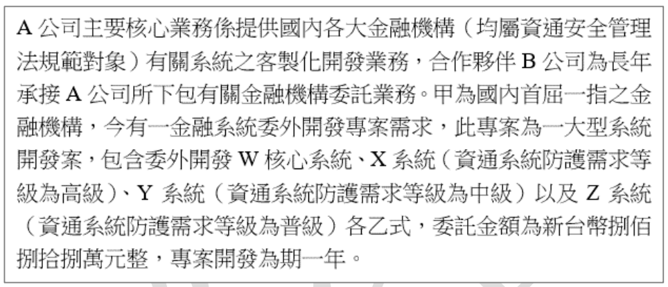
答案解析
根據資通安全管理法及資通安全責任等級分級辦法（特別是附錄八對A級機關的要求），以及金融相關法規（如金融監督管理委員會發布的相關規定），對於核心系統或涉及敏感資料的委外開發案，通常要求進行上線前的安全性檢測（如源碼掃描、滲透測試等）。
(A) 安全性檢測的需求通常基於系統的重要性與風險，而非單純以金額作為唯一判斷標準。Y系統防護等級為中級，可能仍需檢測。
(B) 雖然B公司是開發者（部分），但最終驗收與確保安全的責任在於委託方（甲金融機構）以及主受託方（A公司）。由甲金融機構主導或委託獨立第三方進行檢測，更能確保客觀性。
(C) 由委託方（甲金融機構）自行或委託獨立的第三方進行安全性檢測，是最能確保檢測結果公正客觀的做法，也符合監管要求與最佳實務。這是最適合確保系統安全的作法。
(D) 使用第三方元件或程式碼時，應確保其來源的安全性與合法授權，並進行相應的風險評估與安全檢測，不能僅標示而不提供來源或授權證明，這關係到供應鏈安全與法律合規性。
(A) 安全性檢測的需求通常基於系統的重要性與風險，而非單純以金額作為唯一判斷標準。Y系統防護等級為中級，可能仍需檢測。
(B) 雖然B公司是開發者（部分），但最終驗收與確保安全的責任在於委託方（甲金融機構）以及主受託方（A公司）。由甲金融機構主導或委託獨立第三方進行檢測，更能確保客觀性。
(C) 由委託方（甲金融機構）自行或委託獨立的第三方進行安全性檢測，是最能確保檢測結果公正客觀的做法，也符合監管要求與最佳實務。這是最適合確保系統安全的作法。
(D) 使用第三方元件或程式碼時，應確保其來源的安全性與合法授權，並進行相應的風險評估與安全檢測，不能僅標示而不提供來源或授權證明，這關係到供應鏈安全與法律合規性。
#8
2.2 風險處理實務
【題組1】情境如附圖所示, A公司承攬甲金融機構 (屬資通安全管理法規範對象) 所委託之系統開發案, B公司受A公司之複委託, 辦理部份系統開發業務, B 公司於開發所負責之 Y 系統過程中, 系統開發工程師將開發區之電腦私自連接外部網路, 因故導致該電腦受駭客攻擊, 造成部份系統程式碼外洩之重大資通安全事件。關於此資通安全事件之處置下列哪些最適切? (複選)
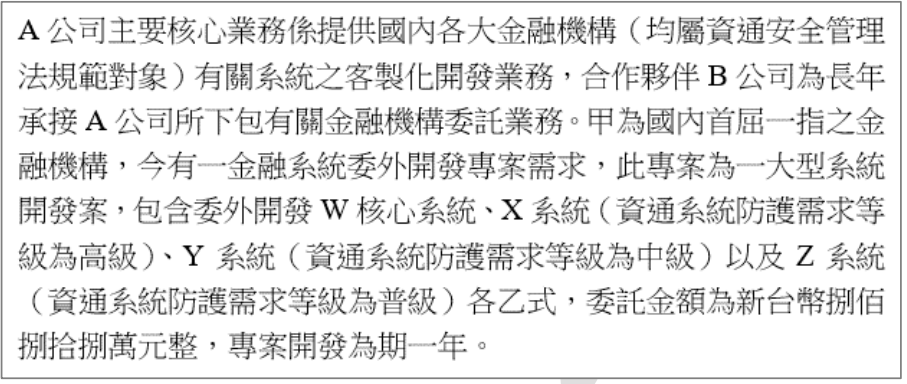
答案解析
發生重大資通安全事件時，需依循事件應變程序及合約約定處理。
(A) 事件起因是系統開發工程師私接網路，而非網路維護工程師。查核對象應針對事件相關人員或管理疏失，此選項對象不符。
(B) 根據資通安全事件通報及應變辦法及合約精神，受託者（包括複委託的B公司）發生資安事件時，應立即向委託方通報。B公司應通報A公司，A公司應通報甲金融機構。此為標準通報流程。
(C) 事件發生後，責任方（B公司）必須採取損害管制與復原等補救措施，例如：隔離受駭電腦、調查外洩範圍、修補漏洞、檢討內部管理流程等。
(D) 委託方（甲金融機構）有權依合約及事件嚴重性決定是否解除委託或複委託。若解除，確保資料依約定方式（返還、刪除等）處理是必要的結案程序，以保護資料安全。
因此，(B)、(C)、(D) 均為資安事件處置中適切的作為。
(A) 事件起因是系統開發工程師私接網路，而非網路維護工程師。查核對象應針對事件相關人員或管理疏失，此選項對象不符。
(B) 根據資通安全事件通報及應變辦法及合約精神，受託者（包括複委託的B公司）發生資安事件時，應立即向委託方通報。B公司應通報A公司，A公司應通報甲金融機構。此為標準通報流程。
(C) 事件發生後，責任方（B公司）必須採取損害管制與復原等補救措施，例如：隔離受駭電腦、調查外洩範圍、修補漏洞、檢討內部管理流程等。
(D) 委託方（甲金融機構）有權依合約及事件嚴重性決定是否解除委託或複委託。若解除，確保資料依約定方式（返還、刪除等）處理是必要的結案程序，以保護資料安全。
因此，(B)、(C)、(D) 均為資安事件處置中適切的作為。
#9
1.2 資安管理實務/架構規劃
下列關於「縱深防禦」的描述, 何者較「不」合適?
答案解析
縱深防禦 (Defense in Depth) 的核心概念是建立多層次、多樣化的安全控制措施，即使某一層防護被突破，其他層次的防護仍然可以發揮作用，以延緩或阻止攻擊。
(A) 描述了縱深防禦使用多種產品和做法保護網路和資產，正確。
(B) 指出縱深防禦等同於分層式安全性，依賴多個控制層，正確。
(C) 說明縱深防禦有助於偵測和阻止攻擊，緩解威脅，正確。
(D) 描述依賴「一個」功能強大的產品，這與縱深防禦的多層次、多樣化的核心理念相悖。單點防禦一旦失效，整個系統就可能暴露在風險中。因此，這個描述最不合適。
(A) 描述了縱深防禦使用多種產品和做法保護網路和資產，正確。
(B) 指出縱深防禦等同於分層式安全性，依賴多個控制層，正確。
(C) 說明縱深防禦有助於偵測和阻止攻擊，緩解威脅，正確。
(D) 描述依賴「一個」功能強大的產品，這與縱深防禦的多層次、多樣化的核心理念相悖。單點防禦一旦失效，整個系統就可能暴露在風險中。因此，這個描述最不合適。
#10
1.2 資安管理實務/架構規劃
設計職務區隔 (SoD) 控制措施時, 宜考量共謀之可能性。小型組織可能發現難以實施職務區隔, 但於可能及可行之情況下, 宜儘可能使用此原則。難以區隔職務時, 宜考量採行相關控制措施來輔助, 下列何者控制措施較「不」適切?
答案解析
職務區隔 (Separation of Duties, SoD) 的目的是防止單一個人擁有過多權限，從而能夠獨立完成一項敏感或關鍵任務，以降低錯誤或舞弊的風險。當難以完全實現 SoD 時，需要採用補償性控制措施 (Compensating Controls)。
(B) 活動監視：透過監控使用者的操作行為，可以偵測異常或未授權的活動，是一種有效的補償措施。
(C) 稽核存底 (Audit Trail)：記錄詳細的操作軌跡，便於事後審查，也是重要的補償措施。
(D) 管理監督：由主管或指定人員加強對相關作業的審核與監督，可以彌補 SoD 的不足。
(A) 全權負責正好是 SoD 所要避免的情況。讓單一人全權負責會增加風險，因此它不是一個用來輔助 SoD 的適切控制措施，反而與 SoD 原則相悖。
(B) 活動監視：透過監控使用者的操作行為，可以偵測異常或未授權的活動，是一種有效的補償措施。
(C) 稽核存底 (Audit Trail)：記錄詳細的操作軌跡，便於事後審查，也是重要的補償措施。
(D) 管理監督：由主管或指定人員加強對相關作業的審核與監督，可以彌補 SoD 的不足。
(A) 全權負責正好是 SoD 所要避免的情況。讓單一人全權負責會增加風險，因此它不是一個用來輔助 SoD 的適切控制措施，反而與 SoD 原則相悖。
#11
1.2 資安管理實務/架構規劃
請問下列對於資訊安全管理實務的描述何者較「不」正確?
答案解析
(A) 正確描述了縱深防禦的多層次特性。
(B) 零信任架構 (Zero Trust Architecture, ZTA) 是一個重要的資安趨勢和理念，許多組織正在導入或規劃導入，但宣稱「已成為國內主流」且「都已廣為採用」可能過於誇大。導入 ZTA 需要時間、資源和技術成熟度，尤其在工控系統 (ICS/OT) 環境中，考量因素更為複雜，全面採用尚需時日。因此，此描述不正確。
(C) 僅知原則和最小權限原則是行之有年的重要存取控制原則，至今仍然非常重要且適用，是資安管理的基石。
(D) 正確描述了職務區隔既是管理要求，也可以透過技術手段（如系統權限設定）來輔助實現，以達成風險控制的目的。
(B) 零信任架構 (Zero Trust Architecture, ZTA) 是一個重要的資安趨勢和理念，許多組織正在導入或規劃導入，但宣稱「已成為國內主流」且「都已廣為採用」可能過於誇大。導入 ZTA 需要時間、資源和技術成熟度，尤其在工控系統 (ICS/OT) 環境中，考量因素更為複雜，全面採用尚需時日。因此，此描述不正確。
(C) 僅知原則和最小權限原則是行之有年的重要存取控制原則，至今仍然非常重要且適用，是資安管理的基石。
(D) 正確描述了職務區隔既是管理要求，也可以透過技術手段（如系統權限設定）來輔助實現，以達成風險控制的目的。
#12
1.2 資安管理實務/架構規劃
依照 CNS 27002: 2023 的建議, 於使用電子通訊設施進行資訊傳送時, 規則、程序及協議宜考量下列那些項目? (複選)
答案解析
CNS 27002:2023（對應 ISO/IEC 27002:2022）提供了資訊安全控制措施的實施指引。關於電子通訊（如電子郵件、即時通訊等）的安全，應考量以下：
(A) 通訊過程中可能夾帶惡意軟體，因此偵測與防範是必要的安全考量。
(B) 自動將內部郵件轉寄至外部存在極大的資料外洩風險，通常應被禁止或嚴格管制，而非為了方便而開放。
(C) 對於透過附件傳遞的敏感資訊，應採取保護措施，例如加密。
(D) 允許使用者自主使用外部公共服務（如個人即時通訊軟體）進行公務通訊，會難以控管與記錄，且可能增加資料外洩與合規風險，通常應有明確的政策規範，不鼓勵自主使用非核准的外部服務。
因此，宜考量的項目為 (A) 和 (C)。
(A) 通訊過程中可能夾帶惡意軟體，因此偵測與防範是必要的安全考量。
(B) 自動將內部郵件轉寄至外部存在極大的資料外洩風險，通常應被禁止或嚴格管制，而非為了方便而開放。
(C) 對於透過附件傳遞的敏感資訊，應採取保護措施，例如加密。
(D) 允許使用者自主使用外部公共服務（如個人即時通訊軟體）進行公務通訊，會難以控管與記錄，且可能增加資料外洩與合規風險，通常應有明確的政策規範，不鼓勵自主使用非核准的外部服務。
因此，宜考量的項目為 (A) 和 (C)。
#13
1.1 ISMS建置實務與法規遵循
【題組2】情境如附圖所示(附圖為文字描述), 依據我國上市上櫃公司資通安全控管指引, 為協助公司強化資通安全防護及管理機制, 於該指引中明文規定必須設置專責人員訂定資通安全政策及目標, 本項明文要求必須由公司內部那一個職務以上核定政策及目標? (附圖摘要: 關於董事會討論資安、AI威脅、NIST CSF 2.0更新、人員訓練等議題)
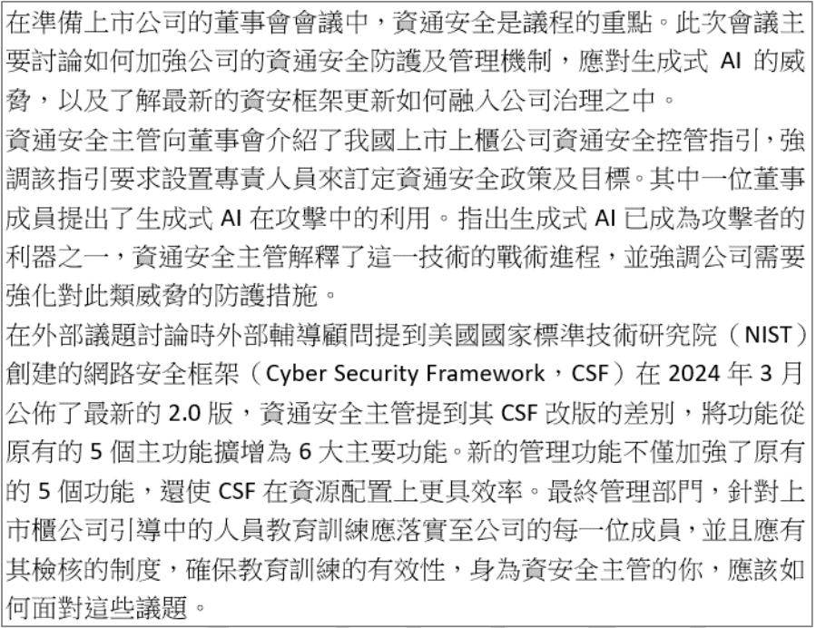
答案解析
根據臺灣證券交易所及櫃檯買賣中心發布的「上市上櫃公司資通安全控管指引」：
- 第二條要求上市上櫃公司應配置適當資訊安全人力及資源。
- 第三條要求公司應訂定資訊安全政策及目標，經副總經理或同等職級以上主管核定，並定期向董事會報告執行情形。
#14
1.2 資安管理實務/架構規劃
【題組2】情境如附圖所示, 生成式 AI也成為攻擊者利用的利器之一, 為使生成式 AI 於攻擊進程中識別, MITRE ATT&CK 也在 2024 年 4 月 26 日所釋出的 15.01 版本中將 AI 納入, 並於技術中新增了一個分類名為 T1588.007 Artificial Intelligence。而攻擊與防護是相庭抗禮, 上述新增的攻擊技術, 為下列 ATT&CK 的那一個戰術進程 (Tactic)?
答案解析
在 MITRE ATT&CK 框架中，戰術 (Tactic) 代表攻擊者實現其目標的技術性目的。T1588 技術系列屬於「Resource Development (資源開發)」戰術。資源開發是指攻擊者在實際發動攻擊前，建立、購買或竊取所需資源的活動。
T1588.007 Artificial Intelligence (人工智慧) 指的是攻擊者獲取或建立 AI/ML 模型，以用於後續的攻擊階段（例如：生成釣魚郵件、製作深度偽造內容、自動化偵察等）。這本質上是一種為攻擊準備資源的行為。
(A) Impact (衝擊)：指攻擊者試圖操控、中斷或銷毀系統和資料的戰術。
(B) Persistence (維持)：指攻擊者試圖維持對目標系統的立足點的戰術。
(C) Defense Evasion (防禦規避)：指攻擊者試圖避免被偵測到的戰術。
因此，T1588.007 屬於 Resource Development 戰術。
T1588.007 Artificial Intelligence (人工智慧) 指的是攻擊者獲取或建立 AI/ML 模型，以用於後續的攻擊階段（例如：生成釣魚郵件、製作深度偽造內容、自動化偵察等）。這本質上是一種為攻擊準備資源的行為。
(A) Impact (衝擊)：指攻擊者試圖操控、中斷或銷毀系統和資料的戰術。
(B) Persistence (維持)：指攻擊者試圖維持對目標系統的立足點的戰術。
(C) Defense Evasion (防禦規避)：指攻擊者試圖避免被偵測到的戰術。
因此，T1588.007 屬於 Resource Development 戰術。
#15
1.1 ISMS建置實務與法規遵循
【題組2】情境如附圖所示, NIST CSF 於近年來已經成為世界各國使用率最高的資安框架, 2024 年 3 月 NIST 公佈了最新版的 2.0 版, 其功能自原有的 5 個主功能, 擴增成為 6 大主要功能, 原有的維度為一個維護的防護流程, 新的管理功能加強了原有的 5 個功能外, 也使 CSF 更具有效率的方式將寶貴且有限的資源做最佳的投注。在 2.0 版新增的功能, 於發佈的資料中稱之為下列何項?
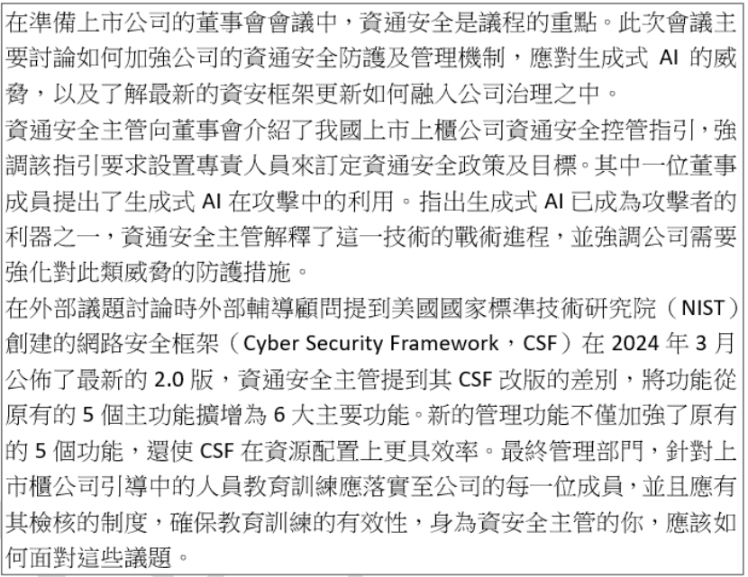
答案解析
NIST 網路安全框架 (Cyber Security Framework, CSF) 1.1 版本包含五個核心功能：Identify (識別), Protect (保護), Detect (偵測), Respond (應變), Recover (復原)。
在 2024 年發布的 NIST CSF 2.0 版本中，新增了第六個核心功能：「Govern (治理)」。治理功能強調組織的網路安全風險管理策略、期望和政策是如何建立和監控的，突顯了高層管理和策略在網路安全中的重要性。這個新增的功能橫跨並支持其他五個功能。
(A), (B), (D) 都是原有的五個功能之一。因此，新增的功能是 (C) Govern。
在 2024 年發布的 NIST CSF 2.0 版本中，新增了第六個核心功能：「Govern (治理)」。治理功能強調組織的網路安全風險管理策略、期望和政策是如何建立和監控的，突顯了高層管理和策略在網路安全中的重要性。這個新增的功能橫跨並支持其他五個功能。
(A), (B), (D) 都是原有的五個功能之一。因此，新增的功能是 (C) Govern。
#16
1.2 資安管理實務/架構規劃
【題組2】情境如附圖所示, 下列那些選項描述的狀況, 何者符合資安三要素中完整性 (Integrity) 的特性? (複選)
答案解析
資訊安全三要素 (CIA Triad) 包括：
(B) SQL Injection 導致資料庫內容被變更（竄改），直接破壞了資料的完整性。
(C) 電子郵件加密主要目的是保護郵件內容在傳輸過程中不被竊聽，保障的是機密性。（雖然數位簽章可以保證完整性，但題目僅提加密）。
(D) 勒索軟體將文件加密導致無法讀取，直接影響了使用者對資訊的存取，破壞了可用性。同時，文件內容被惡意程式（加密）變更，也損害了完整性。
因此，符合完整性特性的是 (B) 和 (D)。 *註：(D) 同時影響可用性與完整性，但題目問是否「符合」完整性特性，因此入選。*
- 機密性 (Confidentiality)：確保資訊不被未授權者存取。
- 完整性 (Integrity)：確保資訊在儲存、傳輸或處理過程中未被未授權地竄改或破壞，保持其準確性與一致性。
- 可用性 (Availability)：確保已授權使用者在需要時能夠存取和使用資訊及相關資產。
(B) SQL Injection 導致資料庫內容被變更（竄改），直接破壞了資料的完整性。
(C) 電子郵件加密主要目的是保護郵件內容在傳輸過程中不被竊聽，保障的是機密性。（雖然數位簽章可以保證完整性，但題目僅提加密）。
(D) 勒索軟體將文件加密導致無法讀取，直接影響了使用者對資訊的存取，破壞了可用性。同時，文件內容被惡意程式（加密）變更，也損害了完整性。
因此，符合完整性特性的是 (B) 和 (D)。 *註：(D) 同時影響可用性與完整性，但題目問是否「符合」完整性特性，因此入選。*
#17
1.2 資安管理實務/架構規劃
關於 NIST SP 800-207 零信任架構 (Zero Trust Architecture) 中的網路敘述, 下列何項錯誤?
答案解析
零信任架構 (ZTA) 的核心原則是「永不信任，一律驗證 (Never Trust, Always Verify)」。它假設網路內部與外部都存在威脅，不應基於網路位置給予隱式信任。
(A) ZTA 的基本假設就是內部網路不再是可信任的區域，必須對內部存取進行驗證和授權。正確。
(B) 隨著 BYOD（自攜設備）和IoT（物聯網）設備的普及，內部網路確實可能存在非企業所有或難以完全管控的設備。正確。
(C) ZTA 原則同樣適用於遠端存取。遠端使用者本地的網路環境（如家用網路）不應被視為可信任，其連線同樣需要經過嚴格的驗證和安全檢查。宣稱可以「完全信任」本地網路連線是錯誤的，違背了零信任原則。
(D) 為了實現一致的安全性，無論資產和工作流程位於何處（企業內部、雲端、遠端），都應套用相同的安全政策和標準。正確。
因此，錯誤的敘述是 (C)。
(A) ZTA 的基本假設就是內部網路不再是可信任的區域，必須對內部存取進行驗證和授權。正確。
(B) 隨著 BYOD（自攜設備）和IoT（物聯網）設備的普及，內部網路確實可能存在非企業所有或難以完全管控的設備。正確。
(C) ZTA 原則同樣適用於遠端存取。遠端使用者本地的網路環境（如家用網路）不應被視為可信任，其連線同樣需要經過嚴格的驗證和安全檢查。宣稱可以「完全信任」本地網路連線是錯誤的，違背了零信任原則。
(D) 為了實現一致的安全性，無論資產和工作流程位於何處（企業內部、雲端、遠端），都應套用相同的安全政策和標準。正確。
因此，錯誤的敘述是 (C)。
#18
1.2 資安管理實務/架構規劃
關於設計供應鏈遠端存取架構的敘述, 下列何項最「不」適切?
答案解析
設計安全的供應鏈遠端存取架構需要考慮多方面控制。
(A) 對於遠端存取，尤其涉及供應鏈夥伴，使用 MFA 強化身份驗證是基本要求。
(B) VPN 提供加密通道，是實現遠端存取控制的常用技術之一（儘管在零信任模型下，其角色可能轉變）。
(C) DLP 工具主要用於偵測和阻止敏感資料外傳，是資料保護的一環，但個人資料保護是一個更廣泛的概念，涉及蒐集、處理、利用、銷毀等整個生命週期的合規性要求（如個資法、GDPR），還包括告知同意、當事人權利行使等。單靠 DLP 無法「做到」完整的個人資料保護，此說法過於簡化且不準確。
(D) 傳輸加密（如 TLS, VPN）是保護資料在傳輸過程中機密性的基本措施，有助於保護營業秘密等敏感資訊。
因此，最不適切的敘述是 (C)。
(A) 對於遠端存取，尤其涉及供應鏈夥伴，使用 MFA 強化身份驗證是基本要求。
(B) VPN 提供加密通道，是實現遠端存取控制的常用技術之一（儘管在零信任模型下，其角色可能轉變）。
(C) DLP 工具主要用於偵測和阻止敏感資料外傳，是資料保護的一環，但個人資料保護是一個更廣泛的概念，涉及蒐集、處理、利用、銷毀等整個生命週期的合規性要求（如個資法、GDPR），還包括告知同意、當事人權利行使等。單靠 DLP 無法「做到」完整的個人資料保護，此說法過於簡化且不準確。
(D) 傳輸加密（如 TLS, VPN）是保護資料在傳輸過程中機密性的基本措施，有助於保護營業秘密等敏感資訊。
因此，最不適切的敘述是 (C)。
#19
1.2 資安管理實務/架構規劃
由於企業對於大型語言模型 (LLM) 的使用需求大增, 企業內的程式開發與研發團隊使用前述技術的雲端服務也日益頻繁, 諸如 ChatGPT 及 Copilot 等等, 然而為了避免公司機密資料外洩, 高階管理階層要求加強對於程式開發與研發團隊使用雲端大型語言模型服務加強控制, 請問下列做法何者較「不」適切?
答案解析
控制使用 LLM 服務以避免機密資料外洩，應著重於資料流向、服務使用權限及 API 安全。
(B) 員工可能將包含機密資訊的程式碼片段上傳至公有 LLM 服務，因此強化 WAF 或 DLP 政策來偵測或阻止這類上傳行為是合理的控制措施。
(C) 清查內部使用的 LLM 服務，並限制或禁止使用未經核准、可能有風險的公有服務，是必要的管理手段。
(D) 若是透過 API 介接 LLM 服務，則必須加強 API 金鑰管理、存取控制及使用監控，以防止濫用或資料外洩。
(A) 微分段 (Micro-segmentation) 主要用於控制內部網路東西向流量，限制攻擊者在內部擴散的能力。對於管控員工使用外部雲端服務（南北向流量）防止資料外洩的關聯性較低。雖然整體網路安全很重要，但針對此特定問題，強化微分段並非最直接或最有效的控制措施。因此，(A) 較不適切。
(B) 員工可能將包含機密資訊的程式碼片段上傳至公有 LLM 服務，因此強化 WAF 或 DLP 政策來偵測或阻止這類上傳行為是合理的控制措施。
(C) 清查內部使用的 LLM 服務，並限制或禁止使用未經核准、可能有風險的公有服務，是必要的管理手段。
(D) 若是透過 API 介接 LLM 服務，則必須加強 API 金鑰管理、存取控制及使用監控，以防止濫用或資料外洩。
(A) 微分段 (Micro-segmentation) 主要用於控制內部網路東西向流量，限制攻擊者在內部擴散的能力。對於管控員工使用外部雲端服務（南北向流量）防止資料外洩的關聯性較低。雖然整體網路安全很重要，但針對此特定問題，強化微分段並非最直接或最有效的控制措施。因此，(A) 較不適切。
#20
1.2 資安管理實務/架構規劃
在安全開發生命週期 (Secure System Develop Life Cycle, SSDLC) 中, 有關開發與測試階段, 可以協助降低資安風險的有下列哪些項目? (複選)
答案解析
SSDLC 的開發與測試階段著重於找出並修復軟體本身的安全弱點。
(A) 部署 WAF 通常是在部署階段進行的操作，屬於運行時的防護措施，而非開發或測試階段直接找出程式碼問題的活動。
(B) 滲透測試是在測試階段模擬駭客攻擊，以發現系統在實際運行環境中可能存在的漏洞，是找出風險的重要方法。
(C) 原始碼檢測 (SAST) 是在開發或測試階段直接分析程式碼，找出潛在的安全缺陷。
(D) 第三方元件資安檢測（或稱軟體組成分析 SCA）是在開發或測試階段檢查所使用的外部函式庫或元件是否存在已知漏洞。
因此，(B)、(C)、(D) 都是在開發與測試階段有助於降低資安風險的活動。
(A) 部署 WAF 通常是在部署階段進行的操作，屬於運行時的防護措施，而非開發或測試階段直接找出程式碼問題的活動。
(B) 滲透測試是在測試階段模擬駭客攻擊，以發現系統在實際運行環境中可能存在的漏洞，是找出風險的重要方法。
(C) 原始碼檢測 (SAST) 是在開發或測試階段直接分析程式碼，找出潛在的安全缺陷。
(D) 第三方元件資安檢測（或稱軟體組成分析 SCA）是在開發或測試階段檢查所使用的外部函式庫或元件是否存在已知漏洞。
因此，(B)、(C)、(D) 都是在開發與測試階段有助於降低資安風險的活動。
#21
1.1 ISMS建置實務與法規遵循
【題組3】情境如附圖所示(附圖為文字描述)。請問公司在建置此網路販售系統時, 下列何項為最「不」需要考慮的項目? (附圖摘要: K公司為上市食品製造商，建置網路販售系統，直接銷售給國內消費者，暫不寄送國外。)
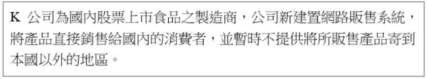
A
主管機關的要求
B
法令規定
C
公司資安長的專長
D
系統安全需求
答案解析
建置網路販售系統時，需要考量多方面的要求：
(A) 身為上市公司且涉及網路交易，必須符合證券主管機關（如金管會、證交所）的相關規定（如資通安全控管指引）。
(B) 網路販售涉及個人資料處理、電子商務、食品安全等，必須遵守相關法令規定，如個人資料保護法、消費者保護法、食品安全衛生管理法等。
(D) 系統本身的功能、效能、穩定性以及最重要的資訊安全需求（如防止資料外洩、確保交易安全）是建置的核心考量。
(C) 公司資安長（或資安主管）的角色是確保公司符合資安要求、制定政策、管理風險，但系統建置應基於業務需求、法規要求及客觀的風險評估，而不是資安長個人的專長。資安長的專長或許會影響其管理風格或技術決策，但不是決定系統「需不需要考慮」某個項目的主要依據。系統該有的安全需求，不應因資安長的專長而增減。因此，這是最不需要直接考慮的項目。
(A) 身為上市公司且涉及網路交易，必須符合證券主管機關（如金管會、證交所）的相關規定（如資通安全控管指引）。
(B) 網路販售涉及個人資料處理、電子商務、食品安全等，必須遵守相關法令規定，如個人資料保護法、消費者保護法、食品安全衛生管理法等。
(D) 系統本身的功能、效能、穩定性以及最重要的資訊安全需求（如防止資料外洩、確保交易安全）是建置的核心考量。
(C) 公司資安長（或資安主管）的角色是確保公司符合資安要求、制定政策、管理風險，但系統建置應基於業務需求、法規要求及客觀的風險評估，而不是資安長個人的專長。資安長的專長或許會影響其管理風格或技術決策，但不是決定系統「需不需要考慮」某個項目的主要依據。系統該有的安全需求，不應因資安長的專長而增減。因此，這是最不需要直接考慮的項目。
#22
2.2 風險處理實務
【題組3】情境如附圖所示。公司於建置系統時評估自行負責金流作業風險過大, 決定將網路金流作業交由合格之金資服務機構辦理, 不自行處理金流作業。請問此項決策屬下列何項風險處理措施?
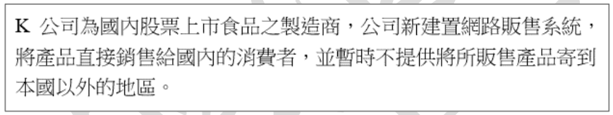
A
風險緩解 (Risk mitigation)
B
風險避免 (Risk avoidance)
C
風險分擔 (Risk sharing)
D
風險保留 (Risk retention)
答案解析
風險處理的選項通常包括：
- 風險避免 (Risk avoidance)：決定不進行會導致風險的活動。
- 風險緩解 (Risk mitigation)：採取措施降低風險發生的可能性或衝擊。
- 風險分擔/轉移 (Risk sharing/transfer)：將部分或全部風險轉移給第三方（如保險、委外）。
- 風險保留/接受 (Risk retention/acceptance)：接受風險存在，不採取特別措施（通常用於低風險或處理成本過高的情況）。
#23
1.2 資安管理實務/架構規劃
【題組3】情境如附圖所示。建置網路販售系統時, 公司考量該系統之機密性、可用性、完整性規劃了相關控制項目, 請問下列何項系統建置規劃「不」屬機密性 (Confidentiality) 之考量?
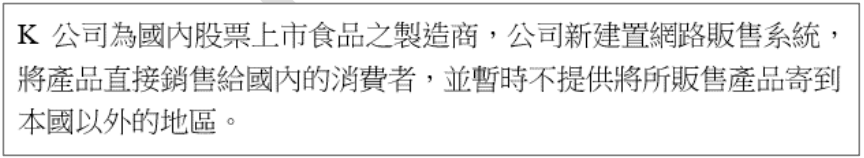
A
規定使用多因子認證登入系統
B
要求定期更改密碼
C
建置即時系統備援機制
D
使用 TLS 1.3 (Transport Layer Security) 加密通訊協定
答案解析
機密性是指確保資訊不被未授權者存取。
(A) 多因子認證 (MFA) 強化了身份驗證，防止未授權者登入系統存取資料，直接關聯機密性。
(B) 要求定期更改密碼，是為了降低密碼洩漏或被破解後長期被濫用的風險，有助於保護帳戶不被未授權存取，關聯機密性。
(C) 建置即時系統備援機制（如 High Availability, HA）主要目的是確保當主系統故障時，備援系統能接管服務，維持系統的持續運作。這主要考量的是可用性 (Availability)。
(D) 使用 TLS 1.3 加密通訊協定，是為了保護資料在傳輸過程中不被竊聽，直接保障機密性。
因此，最不屬於機密性考量的是 (C)。
(A) 多因子認證 (MFA) 強化了身份驗證，防止未授權者登入系統存取資料，直接關聯機密性。
(B) 要求定期更改密碼，是為了降低密碼洩漏或被破解後長期被濫用的風險，有助於保護帳戶不被未授權存取，關聯機密性。
(C) 建置即時系統備援機制（如 High Availability, HA）主要目的是確保當主系統故障時，備援系統能接管服務，維持系統的持續運作。這主要考量的是可用性 (Availability)。
(D) 使用 TLS 1.3 加密通訊協定，是為了保護資料在傳輸過程中不被竊聽，直接保障機密性。
因此，最不屬於機密性考量的是 (C)。
#24
1.1 ISMS建置實務與法規遵循
【題組3】情境如附圖所示。網路販售系統上線 6 個月後, 公司收到證券主管機關通知大量會員資料被人於國外網站上架販售。請問發生此個資外洩事件, 公司於回應此資安事件時, 須注意下列哪些法令規章? (複選)
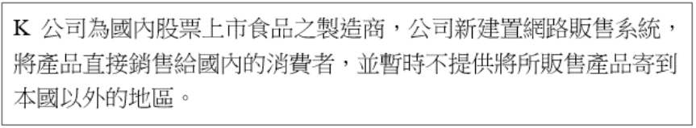
答案解析
發生個資外洩事件時，需遵循的法規：
(A) 電腦處理個人資料保護法是舊法名稱，現已修正為個人資料保護法。
(C) 個人資料保護法 (PDPA) 是處理此類事件的主要依據，規定了個資外洩時的通知義務（通知當事人、通報主管機關）、應採取的補救措施、以及相關的法律責任。
(B) K 公司是上市公司，必須遵守證交所/櫃買中心發布的「上市上櫃公司資通安全管控指引」，該指引對於資安事件（特別是重大事件）的處理、通報（主管機關、重大訊息發布）皆有相關要求。
(D) 食品安全衛生管理法主要規範食品的製造、標示、販售等環節的衛生安全，與個資外洩事件無直接關聯。
因此，需要注意的法令規章是 (A)、(B)、(C)（其中 A 已包含在 C）。*嚴格來說，現行法是 C，但題目列出 A 且 C 亦列出，兩者都與個資相關。B 則是對上市公司的規範。* 最相關的是 B 和 C。 *考量到選項，(A) 雖為舊法名稱，但其精神延續至 (C)，且可能在某些情境或文件中仍被引用。(B) 是對上市公司資安事件的直接規範。(C) 是個資外洩的核心法規。*
(A) 電腦處理個人資料保護法是舊法名稱，現已修正為個人資料保護法。
(C) 個人資料保護法 (PDPA) 是處理此類事件的主要依據，規定了個資外洩時的通知義務（通知當事人、通報主管機關）、應採取的補救措施、以及相關的法律責任。
(B) K 公司是上市公司，必須遵守證交所/櫃買中心發布的「上市上櫃公司資通安全管控指引」，該指引對於資安事件（特別是重大事件）的處理、通報（主管機關、重大訊息發布）皆有相關要求。
(D) 食品安全衛生管理法主要規範食品的製造、標示、販售等環節的衛生安全，與個資外洩事件無直接關聯。
因此，需要注意的法令規章是 (A)、(B)、(C)（其中 A 已包含在 C）。*嚴格來說，現行法是 C，但題目列出 A 且 C 亦列出，兩者都與個資相關。B 則是對上市公司的規範。* 最相關的是 B 和 C。 *考量到選項，(A) 雖為舊法名稱，但其精神延續至 (C)，且可能在某些情境或文件中仍被引用。(B) 是對上市公司資安事件的直接規範。(C) 是個資外洩的核心法規。*
#25
2.1 風險分析與評估
您服務的公司在不同國家或地域皆有設置服務據點, 而您也是該公司總部單位的資訊安全長, 當您預計制定該公司的資訊安全發展策略時, 下列何者是資訊安全長最「不」需優先評估的因素?
答案解析
制定跨國企業的資訊安全發展策略時，需要考量全局性和地域性因素：
(A) 不同層級員工對資安的認知差異會影響策略的推行與落實，是制定策略時需要考量的組織文化與溝通因素。
(C) 各地的法規遵循（如 GDPR, CCPA, 各國個資法、網路安全法）是硬性要求，必須納入策略規劃中，是重要的外部因素。
(D) 維持全球營業安控政策與流程的一致性，同時兼顧地域差異，是確保整體安全水平和管理效率的關鍵內部因素。
(B) 因為時差而聯繫不到高層主管，這更像是一個日常溝通或緊急應變協調的問題，而非制定長期安全發展策略時最需優先評估的核心因素。策略的制定應基於風險、法規、業務目標等宏觀層面，而非高層主管的即時可聯繫性。雖然溝通管道很重要，但相較於認知、法規、一致性等，時差導致的聯繫問題在策略制定層面的優先級較低。
(A) 不同層級員工對資安的認知差異會影響策略的推行與落實，是制定策略時需要考量的組織文化與溝通因素。
(C) 各地的法規遵循（如 GDPR, CCPA, 各國個資法、網路安全法）是硬性要求，必須納入策略規劃中，是重要的外部因素。
(D) 維持全球營業安控政策與流程的一致性，同時兼顧地域差異，是確保整體安全水平和管理效率的關鍵內部因素。
(B) 因為時差而聯繫不到高層主管，這更像是一個日常溝通或緊急應變協調的問題，而非制定長期安全發展策略時最需優先評估的核心因素。策略的制定應基於風險、法規、業務目標等宏觀層面，而非高層主管的即時可聯繫性。雖然溝通管道很重要，但相較於認知、法規、一致性等，時差導致的聯繫問題在策略制定層面的優先級較低。
#26
2.2 風險處理實務
Arc 公司於數日前遭受電子郵件社交工程攻擊, 員工點選外部寄來的電子郵件並開啟電子郵件夾帶的勒索軟體, 造成公司內容多台電腦內的檔案被加密。經過事件風險評鑑後, 發覺針對此類事件未來改善的方式為: 事前缺乏教育訓練, 以及事發時未有備份資料足以提供使用者復原使用。請問, 上述所指二種控制措施, 分別屬於何種控制措施類型?
答案解析
分析兩種控制措施的類型：
- 事前缺乏教育訓練：教育訓練的目的是提升員工的資安意識和知識，預防他們點擊惡意郵件或執行危險操作。因此，教育訓練屬於預防型 (Preventive) 控制措施。
- 事發時未有備份資料：備份資料的目的是在資料損毀或被加密後，能夠將資料恢復到正常狀態。因此，備份與還原機制屬於矯正型 (Corrective) 或回復型 (Recovery) 控制措施。
#27
2.1 風險分析與評估
關於風險分析與評估之敘述, 下列何者最「不」適切?
答案解析
風險評鑑是一個持續的過程。
(A) 定期（如每年）進行風險評鑑是常見的最佳實務，以應對變化的威脅環境和內部條件。
(B) 當組織發生重大改變（如引入新技術、重大組織調整、業務流程變更等）時，可能會引入新的風險或改變現有風險的狀況，因此應觸發風險評鑑。
(C) 風險處理措施實施後，必須進行風險再評估，以確認處理措施是否有效、是否將風險降低到可接受水準、以及是否產生了新的次級風險。宣稱處理後不需再評估是錯誤的。
(D) 在進行風險評鑑前，充分了解組織的背景環境，包括業務目標、資產、威脅、弱點、現有控制措施、法規要求等，是評估風險的基礎。
因此，最不適切的敘述是 (C)。
(A) 定期（如每年）進行風險評鑑是常見的最佳實務，以應對變化的威脅環境和內部條件。
(B) 當組織發生重大改變（如引入新技術、重大組織調整、業務流程變更等）時，可能會引入新的風險或改變現有風險的狀況，因此應觸發風險評鑑。
(C) 風險處理措施實施後，必須進行風險再評估，以確認處理措施是否有效、是否將風險降低到可接受水準、以及是否產生了新的次級風險。宣稱處理後不需再評估是錯誤的。
(D) 在進行風險評鑑前，充分了解組織的背景環境，包括業務目標、資產、威脅、弱點、現有控制措施、法規要求等，是評估風險的基礎。
因此，最不適切的敘述是 (C)。
#28
2.2 風險處理實務
甲公司因 A 製程所用之所有機台當機, 造成生產線停工、影響產品生產, 經公司資安人員分析評估後, 確認發生原因為廠商透過 USB 更新機台應用程式過程控制不當, 導致機台程式異常所致。請問下列哪些選項為降低機台程式更新異常的風險緩解 (Risk Mitigation) 措施? (複選)
答案解析
風險緩解 (Risk Mitigation) 是指採取措施降低風險發生的可能性或衝擊。
(A) 將製程委外處理可能是風險轉移或風險避免（避免自己操作的風險），而非直接降低「程式更新異常」這個風險本身的措施。
(B) 要求 USB 使用前掃毒，可以降低因惡意軟體導致更新異常的可能性。
(C) 要求廠商提供保證金，目的是在風險發生後獲得財務補償，屬於風險轉移（將財務損失風險部分轉移給廠商），而非降低事件發生的可能性或直接衝擊。
(D) 分批更新並確認無誤後再進行下一步，可以限制更新失敗時的影響範圍（降低衝擊），並及早發現問題（降低可能性擴散），是有效的緩解措施。
因此，屬於風險緩解措施的是 (B) 和 (D)。
(A) 將製程委外處理可能是風險轉移或風險避免（避免自己操作的風險），而非直接降低「程式更新異常」這個風險本身的措施。
(B) 要求 USB 使用前掃毒，可以降低因惡意軟體導致更新異常的可能性。
(C) 要求廠商提供保證金，目的是在風險發生後獲得財務補償，屬於風險轉移（將財務損失風險部分轉移給廠商），而非降低事件發生的可能性或直接衝擊。
(D) 分批更新並確認無誤後再進行下一步，可以限制更新失敗時的影響範圍（降低衝擊），並及早發現問題（降低可能性擴散），是有效的緩解措施。
因此，屬於風險緩解措施的是 (B) 和 (D)。
#29
1.2 資安管理實務/架構規劃
【題組4】情境如附圖所示(附圖為ZTA示意圖)。關於規劃零信任資安架構的敘述, 下列何者有誤? (附圖摘要: 陳生為跨國企業資安人員，因應供應鏈要求規劃ZTA，參考NIST SP 800-207)
答案解析
零信任架構 (ZTA) 涉及多個層面的控制。
(A) 控制允許哪些來源 IP 或使用者透過 RDP 進行連線（例如透過防火牆或存取控制清單設定白名單），是網路層存取控制的一種方法，符合零信任中明確授權的精神。
(C) 微隔離透過細粒度的網路分段，限制東西向流量，強制對應用程式或工作負載間的通訊進行驗證和授權，是實現零信任網路控制的關鍵技術。
(D) DLP 工具可以監控和控制資料的存取和流動，防止未經授權的資料外洩，有助於落實零信任對資料存取的保護原則。
(B) 零信任是一個全面的架構和理念，涉及身份、設備、網路、應用、資料等多個層面的持續驗證、最小權限、微隔離、監控分析等。僅僅設定IP 白名單是遠遠不夠的，它只解決了網路層來源驗證的一部分問題，無法涵蓋身份驗證、設備狀態、應用授權等多方面要求。宣稱只要設定白名單就能完全符合零信任是錯誤的。
(A) 控制允許哪些來源 IP 或使用者透過 RDP 進行連線（例如透過防火牆或存取控制清單設定白名單），是網路層存取控制的一種方法，符合零信任中明確授權的精神。
(C) 微隔離透過細粒度的網路分段，限制東西向流量，強制對應用程式或工作負載間的通訊進行驗證和授權，是實現零信任網路控制的關鍵技術。
(D) DLP 工具可以監控和控制資料的存取和流動，防止未經授權的資料外洩，有助於落實零信任對資料存取的保護原則。
(B) 零信任是一個全面的架構和理念，涉及身份、設備、網路、應用、資料等多個層面的持續驗證、最小權限、微隔離、監控分析等。僅僅設定IP 白名單是遠遠不夠的，它只解決了網路層來源驗證的一部分問題，無法涵蓋身份驗證、設備狀態、應用授權等多方面要求。宣稱只要設定白名單就能完全符合零信任是錯誤的。
#30
1.2 資安管理實務/架構規劃
【題組4】情境如附圖所示。針對遠端使用供應鏈管理系統、資料存取、設備辨識等項目規劃零信任架構。在設計資安架構時, 「不」包含下列何項原則?
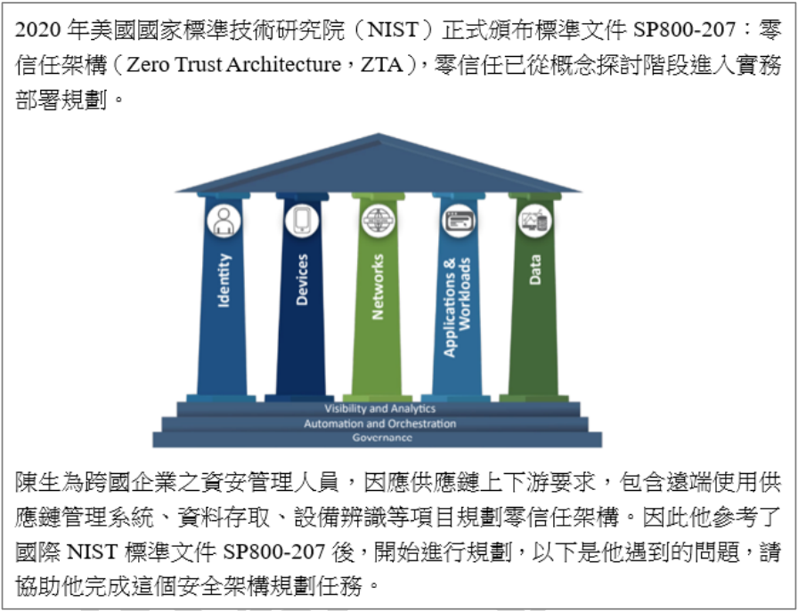
答案解析
設計零信任架構 (ZTA) 時，根據 NIST SP 800-207，需要考慮的關鍵要素和原則包括：
(C) 工作流程（或交易流程）的分析是設計零信任的基礎，以確定保護邊界和控制點。
(D) 存取政策是零信任的核心執行機制。
(A) 資產採購本身是獲取資產的過程，雖然採購來的資產需要納入零信任管理，但採購行為本身並非零信任架構的核心設計原則之一。設計原則更關注如何對「已存在」或「將存在」的資產進行存取控制。因此，資產採購相對不直接包含在零信任架構的設計原則中。
- 識別需要保護的資產（資料、應用、服務等）。
- 繪製交易流程 (Transaction Flows)，了解不同元件（使用者、設備、應用）如何互動。
- 設計零信任架構的元件關係和網路布局。
- 制定和實施存取政策 (Access Policies)，基於身份、設備狀態、資源屬性等進行動態授權。
- 監控和測量網路流量和存取行為。
(C) 工作流程（或交易流程）的分析是設計零信任的基礎，以確定保護邊界和控制點。
(D) 存取政策是零信任的核心執行機制。
(A) 資產採購本身是獲取資產的過程，雖然採購來的資產需要納入零信任管理，但採購行為本身並非零信任架構的核心設計原則之一。設計原則更關注如何對「已存在」或「將存在」的資產進行存取控制。因此，資產採購相對不直接包含在零信任架構的設計原則中。
#31
1.2 資安管理實務/架構規劃
【題組4】情境如附圖所示。CISA (美國網路安全暨基礎設施安全局) 零信任成熟模型 (Zero Trust Maturity Model, ZTMM), 針對遠端使用供應鏈管理系統、資料存取、設備辨識等項目規劃零信任架構。關於設計與部署原則的敘述, 下列何者最正確?
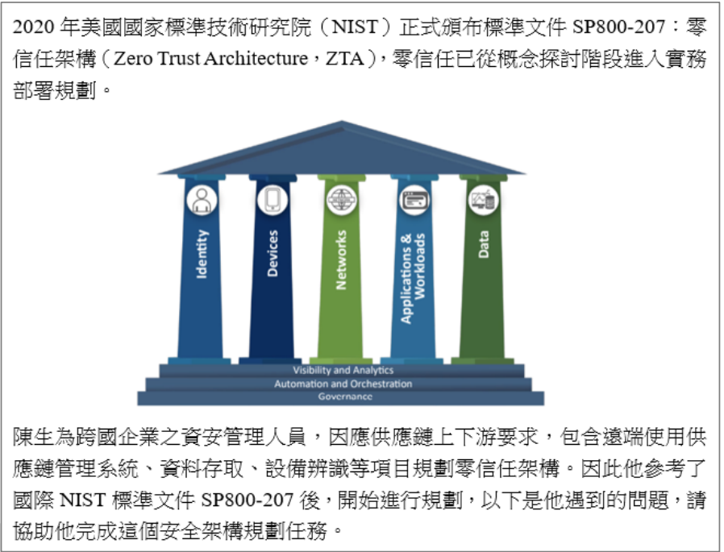
答案解析
零信任的核心原則是對所有資源的存取進行嚴格控制。
(A) 員工自帶裝置 (BYOD) 存取企業資源時，必須納入零信任架構進行管理和驗證，因為它們可能帶來風險。錯誤。
(B) 雲端是現代 IT 環境的重要組成部分，雲端的資料和服務必須納入零信任架構進行統一管理和保護。錯誤。
(C) 零信任將網路中的一切都視為需要保護的資源，包括資料來源、應用程式、雲服務、運算服務等。對這些資源的存取都需要經過驗證和授權。這是零信任的基本假設。正確。
(D) 零信任強調持續驗證和動態授權。存取決策應基於多種因素（身份、設備健康、位置、行為分析等）的即時監控結果，並根據風險動態調整權限，而非靜態的一次性授權。錯誤。
因此，最正確的敘述是 (C)。
(A) 員工自帶裝置 (BYOD) 存取企業資源時，必須納入零信任架構進行管理和驗證，因為它們可能帶來風險。錯誤。
(B) 雲端是現代 IT 環境的重要組成部分，雲端的資料和服務必須納入零信任架構進行統一管理和保護。錯誤。
(C) 零信任將網路中的一切都視為需要保護的資源，包括資料來源、應用程式、雲服務、運算服務等。對這些資源的存取都需要經過驗證和授權。這是零信任的基本假設。正確。
(D) 零信任強調持續驗證和動態授權。存取決策應基於多種因素（身份、設備健康、位置、行為分析等）的即時監控結果，並根據風險動態調整權限，而非靜態的一次性授權。錯誤。
因此，最正確的敘述是 (C)。
#32
1.2 資安管理實務/架構規劃
【題組4】情境如附圖所示。關於 NIST SP 800-207 零信任架構 (Zero Trust Architecture) 的基本規則敘述, 下列何者正確? (複選)
答案解析
NIST SP 800-207 闡述了零信任的幾個核心原則（Tenets）：
1. 所有資料來源和運算服務都被視為資源 (Resources)。(選項 C 正確)
2. 無論網路位置如何，所有通訊都需受保護 (Secured)。(選項 A 正確)
3. 對企業資源的存取是基於單個會話 (Per-Session) 授予的。
4. 對資源的存取由動態策略決定，包括客戶端身份、應用程式/服務和請求資產的可觀察狀態，並可能包括其他行為和環境屬性。
5. 企業監控和測量所有自有和相關資產的完整性和安全狀況。(選項 B 正確)
6. 所有資源的身份驗證和授權都是動態的，並在允許訪問之前嚴格執行。
7. 企業盡可能多地收集有關資產、網路基礎設施和通信的當前狀態信息，並利用其來改善其安全狀況。
(D) 雖然建立資產清冊是實施零信任的基礎步驟（符合原則 7 的精神），但它更像是一個前提工作，而非NIST 列出的七個核心原則本身。相比之下，A、B、C 直接對應了NIST 明確闡述的核心原則。
因此，正確的敘述是 (A)、(B)、(C)。*（雖然 D 也是必要步驟，但 A, B, C 更直接對應 NIST 的核心原則）*
1. 所有資料來源和運算服務都被視為資源 (Resources)。(選項 C 正確)
2. 無論網路位置如何，所有通訊都需受保護 (Secured)。(選項 A 正確)
3. 對企業資源的存取是基於單個會話 (Per-Session) 授予的。
4. 對資源的存取由動態策略決定，包括客戶端身份、應用程式/服務和請求資產的可觀察狀態，並可能包括其他行為和環境屬性。
5. 企業監控和測量所有自有和相關資產的完整性和安全狀況。(選項 B 正確)
6. 所有資源的身份驗證和授權都是動態的，並在允許訪問之前嚴格執行。
7. 企業盡可能多地收集有關資產、網路基礎設施和通信的當前狀態信息，並利用其來改善其安全狀況。
(D) 雖然建立資產清冊是實施零信任的基礎步驟（符合原則 7 的精神），但它更像是一個前提工作，而非NIST 列出的七個核心原則本身。相比之下，A、B、C 直接對應了NIST 明確闡述的核心原則。
因此，正確的敘述是 (A)、(B)、(C)。*（雖然 D 也是必要步驟，但 A, B, C 更直接對應 NIST 的核心原則）*
#33
2.2 風險處理實務
有關風險處理選項之敘述, 下列何項「有誤」?
答案解析
關於風險處理選項：
(A) 風險處理選項（避免、緩解、轉移、接受）並非總是相互排斥。例如，可以採取一些緩解措施，同時購買保險進行風險轉移，對於剩餘的風險選擇接受。因此，宣稱它們一定相互排斥是錯誤的。
(B) 選擇處理選項時，需要進行成本效益分析，權衡處理措施的成本與其帶來的潛在利益（風險降低程度、達成目標的可能性等）。正確。
(C) 風險處理不僅僅是降低負面風險，也包括為了追求機會而有意識地接受甚至增加某些風險（屬於風險接受/保留的一種策略）。正確。
(D) 移除風險來源是風險避免 (Risk avoidance) 的一種方式，也是有效的處理選項之一。正確。
因此，錯誤的敘述是 (A)。
(A) 風險處理選項（避免、緩解、轉移、接受）並非總是相互排斥。例如，可以採取一些緩解措施，同時購買保險進行風險轉移，對於剩餘的風險選擇接受。因此，宣稱它們一定相互排斥是錯誤的。
(B) 選擇處理選項時，需要進行成本效益分析，權衡處理措施的成本與其帶來的潛在利益（風險降低程度、達成目標的可能性等）。正確。
(C) 風險處理不僅僅是降低負面風險，也包括為了追求機會而有意識地接受甚至增加某些風險（屬於風險接受/保留的一種策略）。正確。
(D) 移除風險來源是風險避免 (Risk avoidance) 的一種方式，也是有效的處理選項之一。正確。
因此，錯誤的敘述是 (A)。
#34
2.2 風險處理實務
針對風險處理的描述, 下列何者最「不」適切?
答案解析
風險處理流程的管理：
(A) 風險擁有者 (Risk Owner) 是對特定風險負有管理責任的人，風險處理計畫的制定與執行應由其負責並核准。正確。
(B) 如同 Q33所述，選擇處理方式需進行成本效益分析。正確。
(C) 即使經過風險處理後，仍然會存在剩餘風險 (Residual Risk)。風險擁有者必須評估這個剩餘風險是否在可接受的範圍內，並正式接受這個剩餘風險。這個接受過程本身就是一種核可。宣稱不需要再次核可是錯誤的。
(D) 如同 Q33所述，風險處理選項並非完全互斥，可以組合使用。正確。
因此，最不適切的描述是 (C)。
(A) 風險擁有者 (Risk Owner) 是對特定風險負有管理責任的人，風險處理計畫的制定與執行應由其負責並核准。正確。
(B) 如同 Q33所述，選擇處理方式需進行成本效益分析。正確。
(C) 即使經過風險處理後，仍然會存在剩餘風險 (Residual Risk)。風險擁有者必須評估這個剩餘風險是否在可接受的範圍內，並正式接受這個剩餘風險。這個接受過程本身就是一種核可。宣稱不需要再次核可是錯誤的。
(D) 如同 Q33所述，風險處理選項並非完全互斥，可以組合使用。正確。
因此，最不適切的描述是 (C)。
#35
2.2 風險處理實務
有關如何進行風險處理的描述, 下列何者最「不」適切?
答案解析
進行風險處理時的管理考量：
(A) 導入新的風險處理措施（如新的安全工具或流程）本身可能引入新的風險（如工具的漏洞、設定錯誤、管理複雜性增加），這些次級風險也需要被管理。正確。
(B) 對於超過可接受水準的風險，不應僅是列入觀察，而是需要積極規劃和實施處理措施（避免、緩解、轉移），直到剩餘風險降低到可接受範圍內。僅列入觀察而不處理是不負責任的。錯誤。
(C) 風險擁有者及相關的利害關係者需要了解處理後的剩餘風險水準，以便做出接受風險或進一步處理的決策。正確。
(D) 風險處理的有效性需要持續監控，殘餘風險應被文件化記錄，並透過定期審查來確認控制措施是否仍然有效，以及風險狀況是否發生變化。正確。
因此，最不適切的描述是 (B)。
(A) 導入新的風險處理措施（如新的安全工具或流程）本身可能引入新的風險（如工具的漏洞、設定錯誤、管理複雜性增加），這些次級風險也需要被管理。正確。
(B) 對於超過可接受水準的風險，不應僅是列入觀察，而是需要積極規劃和實施處理措施（避免、緩解、轉移），直到剩餘風險降低到可接受範圍內。僅列入觀察而不處理是不負責任的。錯誤。
(C) 風險擁有者及相關的利害關係者需要了解處理後的剩餘風險水準，以便做出接受風險或進一步處理的決策。正確。
(D) 風險處理的有效性需要持續監控，殘餘風險應被文件化記錄，並透過定期審查來確認控制措施是否仍然有效，以及風險狀況是否發生變化。正確。
因此，最不適切的描述是 (B)。
#36
2.1 風險分析與評估
資料庫伺服器時間校正功能發生狀況的風險問題, 最應加強下列哪幾項控制措施? (複選)
答案解析
伺服器時間不準確會導致日誌記錄時間戳錯誤，影響事件追蹤與分析，也可能影響需要時間同步的認證機制（如 Kerberos）或交易系統。
(A) 事件分析：準確的時間戳是事件分析的基礎。若時間校正出問題，會直接衝擊事件分析的準確性與有效性，因此需要加強監控時間同步狀態，並在分析時考慮時間偏差。
(B) 時間同步 (Time Synchronization)：這是最直接的控制措施。確保伺服器配置正確的時間同步機制（如 NTP），並監控其運作狀態，是防止時間偏差的根本方法。
(C) 網路連通監控：伺服器通常需要透過網路連接到時間伺服器 (NTP Server) 進行校時。監控伺服器與時間伺服器之間的網路連通性，有助於確保時間同步功能正常運作。
(D) 存取控制：雖然整體安全需要存取控制，但它與解決「時間校正功能異常」這個特定風險問題的直接關聯性較低。
因此，最應加強的控制措施是 (A)、(B)、(C)。
(A) 事件分析：準確的時間戳是事件分析的基礎。若時間校正出問題，會直接衝擊事件分析的準確性與有效性，因此需要加強監控時間同步狀態，並在分析時考慮時間偏差。
(B) 時間同步 (Time Synchronization)：這是最直接的控制措施。確保伺服器配置正確的時間同步機制（如 NTP），並監控其運作狀態，是防止時間偏差的根本方法。
(C) 網路連通監控：伺服器通常需要透過網路連接到時間伺服器 (NTP Server) 進行校時。監控伺服器與時間伺服器之間的網路連通性，有助於確保時間同步功能正常運作。
(D) 存取控制：雖然整體安全需要存取控制，但它與解決「時間校正功能異常」這個特定風險問題的直接關聯性較低。
因此，最應加強的控制措施是 (A)、(B)、(C)。
#37
2.2 風險處理實務
【題組5】情境如附圖所示(附圖為文字描述), 在美國國家標準暨技術研究院 (NIST) 訂定的軟體開發安全框架 (Secure Software Development Framework, SSDF) 中提到第三方元件弱點的風險管控, 下列達成風險管控的方式何者錯誤? (附圖摘要: 產業對軟體供應鏈韌性要求，含上下游公司資安、軟體安全。風險管理可參考或導入ISO。)
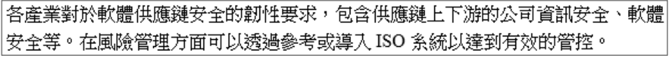
答案解析
軟體供應鏈安全風險管控，特別是針對第三方元件（開源或商業函式庫/套件），SSDF 和一般實務都強調：
(A) 建立和維護軟體物料清單 (Software Bill of Materials, SBOM)，盤點所有使用的第三方元件及其版本，是管理的基礎。
(B) 利用軟體組成分析 (SCA) 工具或公開漏洞資料庫，清查所用元件是否存在已知弱點。
(C) 持續監控新的弱點情資，以便在發現新漏洞時及時應對。
(D) 使用較不知名的元件通常風險更高，因為它們可能缺乏維護、社群支援小、安全審查不足，且一旦發現漏洞可能難以獲得修補。選擇信譽良好、廣泛使用且積極維護的元件通常是更安全的做法。因此，使用不知名元件不是一個好的風險管控方式，反而是錯誤的。
(A) 建立和維護軟體物料清單 (Software Bill of Materials, SBOM)，盤點所有使用的第三方元件及其版本，是管理的基礎。
(B) 利用軟體組成分析 (SCA) 工具或公開漏洞資料庫，清查所用元件是否存在已知弱點。
(C) 持續監控新的弱點情資，以便在發現新漏洞時及時應對。
(D) 使用較不知名的元件通常風險更高，因為它們可能缺乏維護、社群支援小、安全審查不足，且一旦發現漏洞可能難以獲得修補。選擇信譽良好、廣泛使用且積極維護的元件通常是更安全的做法。因此，使用不知名元件不是一個好的風險管控方式，反而是錯誤的。
#38
2.1 風險分析與評估
【題組5】情境如附圖所示, 在風險管理上, 使用威脅評估模型進行供應鏈資安風險評估。請問下何者敘述錯誤?

答案解析
威脅建模 (Threat Modeling) 是識別和評估潛在威脅的結構化方法。有多種模型和方法論：
(A) DREAD (Damage potential, Reproducibility, Exploitability, Affected users, Discoverability) 是早期由微軟提出的風險評估模型，用於對威脅進行量化評分。
(B) STRIDE (Spoofing, Tampering, Repudiation, Information disclosure, Denial of service, Elevation of privilege) 是由微軟開發的威脅分類模型，用於識別系統可能面臨的威脅類型。
(C) VAST (Visual, Agile, and Simple Threat Modeling) 是一種較新的、以流程為中心的威脅建模方法論。
(D) NIST (National Institute of Standards and Technology) 是美國國家標準暨技術研究院，它發布了許多標準和指南（如 SP 800 系列、CSF），涉及風險管理、安全框架等多個方面，但 NIST 本身並非一個特定的威脅建模「模型」或「模式」。它提供了進行風險評估和威脅分析的框架和建議，但不是像 STRIDE 或 DREAD 那樣的具體模型。因此此敘述錯誤。
(A) DREAD (Damage potential, Reproducibility, Exploitability, Affected users, Discoverability) 是早期由微軟提出的風險評估模型，用於對威脅進行量化評分。
(B) STRIDE (Spoofing, Tampering, Repudiation, Information disclosure, Denial of service, Elevation of privilege) 是由微軟開發的威脅分類模型，用於識別系統可能面臨的威脅類型。
(C) VAST (Visual, Agile, and Simple Threat Modeling) 是一種較新的、以流程為中心的威脅建模方法論。
(D) NIST (National Institute of Standards and Technology) 是美國國家標準暨技術研究院，它發布了許多標準和指南（如 SP 800 系列、CSF），涉及風險管理、安全框架等多個方面，但 NIST 本身並非一個特定的威脅建模「模型」或「模式」。它提供了進行風險評估和威脅分析的框架和建議，但不是像 STRIDE 或 DREAD 那樣的具體模型。因此此敘述錯誤。
#39
2.2 風險處理實務
【題組5】情境如附圖所示, 下列何者「不」是正確的軟體風險管理控制方法?

答案解析
有效的軟體風險管理控制方法應涵蓋開發、部署和維護階段。
(A) 管理第三方元件（如開源軟體）的弱點是供應鏈風險管理的重要一環。正確。
(B) 在委外開發或採購軟體時，於合約中明確約定開發商或供應商對於資安漏洞的修補責任與時效，是重要的法律與管理控制。正確。
(C) 定期進行弱點掃描、滲透測試，並根據結果進行更新與修補，是維持軟體安全的基本要求。正確。
(D) 「透過第三方軟體庫進行更新」這個描述過於籠統且可能有風險。雖然更新通常來自第三方（如作業系統供應商、軟體開發商），但重點在於確保更新來源的可信度與更新檔案的完整性。若指的是任意從不可信的第三方軟體庫下載更新，反而可能引入惡意軟體或不安全的版本。因此，這個描述本身不一定是「正確」的控制方法，甚至可能帶來風險。相比之下，A、B、C 都是明確且必要的控制方法。
(A) 管理第三方元件（如開源軟體）的弱點是供應鏈風險管理的重要一環。正確。
(B) 在委外開發或採購軟體時，於合約中明確約定開發商或供應商對於資安漏洞的修補責任與時效，是重要的法律與管理控制。正確。
(C) 定期進行弱點掃描、滲透測試，並根據結果進行更新與修補，是維持軟體安全的基本要求。正確。
(D) 「透過第三方軟體庫進行更新」這個描述過於籠統且可能有風險。雖然更新通常來自第三方（如作業系統供應商、軟體開發商），但重點在於確保更新來源的可信度與更新檔案的完整性。若指的是任意從不可信的第三方軟體庫下載更新，反而可能引入惡意軟體或不安全的版本。因此，這個描述本身不一定是「正確」的控制方法，甚至可能帶來風險。相比之下，A、B、C 都是明確且必要的控制方法。
#40
2.2 風險處理實務
【題組5】情境如附圖所示, 在軟體供應鏈中的風險管理上, 有以下哪些方式進行資安預防及檢測? (複選)

答案解析
在軟體供應鏈風險管理中，預防與檢測的常見方法：
(A) SBOM 提供軟體組成的透明度，列出所有直接和間接的元件，是識別和管理元件風險的基礎，屬於預防和檢測的一環。
(B) 原始碼檢測 (SAST) 用於在開發階段找出程式碼中的安全缺陷。防毒掃描則用於檢測已知的惡意軟體。兩者都是重要的檢測手段。
(C) IAS-99 通常指的是Statement on Auditing Standards No. 99（現已整合至AU-C Section 240），主要涉及財務報表審計中對舞弊的考量，與軟體供應鏈資安預防檢測無直接關係。
(D) SEMI 標準主要應用於半導體和電子製造業。SEMI 197 可能是一個不存在或不相關的標準編號（SEMI 標準通常格式為 SEMI E5, SEMI S2 等）。即使存在相關標準，其適用範圍也較特定，未必是通用的軟體供應鏈資安檢測方式。
因此，適用於軟體供應鏈資安預防及檢測的方式是 (A) 和 (B)。
(A) SBOM 提供軟體組成的透明度，列出所有直接和間接的元件，是識別和管理元件風險的基礎，屬於預防和檢測的一環。
(B) 原始碼檢測 (SAST) 用於在開發階段找出程式碼中的安全缺陷。防毒掃描則用於檢測已知的惡意軟體。兩者都是重要的檢測手段。
(C) IAS-99 通常指的是Statement on Auditing Standards No. 99（現已整合至AU-C Section 240），主要涉及財務報表審計中對舞弊的考量，與軟體供應鏈資安預防檢測無直接關係。
(D) SEMI 標準主要應用於半導體和電子製造業。SEMI 197 可能是一個不存在或不相關的標準編號（SEMI 標準通常格式為 SEMI E5, SEMI S2 等）。即使存在相關標準，其適用範圍也較特定，未必是通用的軟體供應鏈資安檢測方式。
因此，適用於軟體供應鏈資安預防及檢測的方式是 (A) 和 (B)。